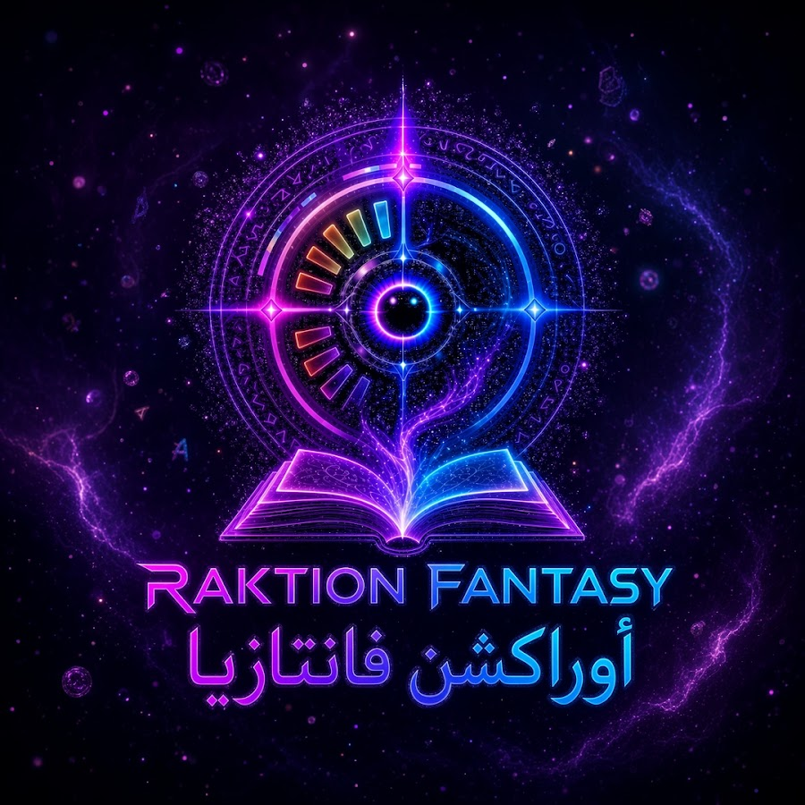

جلسة الرؤية
Salman Al Husseini · AI Creative Director & Multimedia Creator
أعمال أوراكشن، ومساهماتي في الصورة والصوت، ونقطة البداية المناسبة لمشروعك.

Salman Al Husseini · AI Creative Director & Multimedia Creator
أعمال أوراكشن، ومساهماتي في الصورة والصوت، ونقطة البداية المناسبة لمشروعك.